Chapter 13. Alert log
This chapter provides an overview of alert management – a collective, dynamic process that takes place with clinicians, reporting officers, labs and the community. Alert management is one of the major features of the Early Warning, Alert and Response System (EWARS).
Alerts triggered are recorded in the Alert log. You have to follow a standardized four-stage workflow to manage them effectively (Fig. 13.1):
verification
risk assessment
risk characterization
outcome.
Fig. 13.1. Alert workflow process
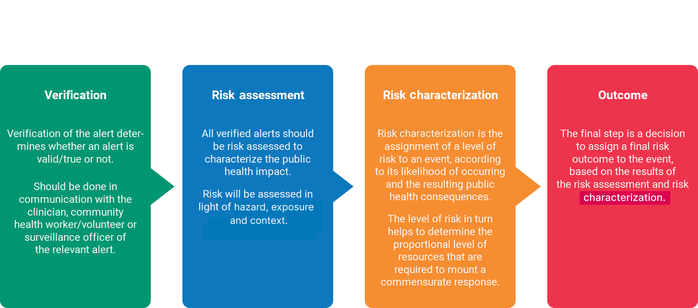
Alerts are triggered based on the criteria set under each disease or event, according to the prevailing conditions. Alert criteria are set under alarms. It is recommended that you read the alarms chapter before managing the alert log. for more information on alarms, refer to Chapter 7. Alarms.
13.1 Viewing triggered alerts
The alerts below are triggered based on alarms that you have set up under the Alarms feature.
- Select Menu > Alert Logs > Open alerts, and open alerts are listed, as shown below:
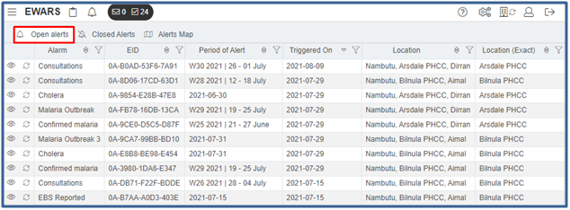
- Click on the view
 icon of an alert (e.g. Cholera), and the alert overview screen opens, as shown below:
icon of an alert (e.g. Cholera), and the alert overview screen opens, as shown below:
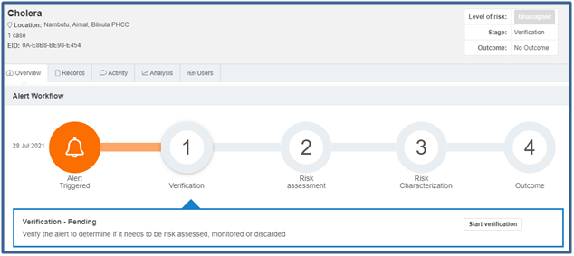
You can see above that the cholera alert is triggered, and its verification is pending.
13.1.1 Viewing the report that triggered the alert
- Select Menu > Alert Logs > Open Alerts. Click on the view icon of an alert > click on the tab > click on the report visible at the left-hand side to view the information, as shown below:
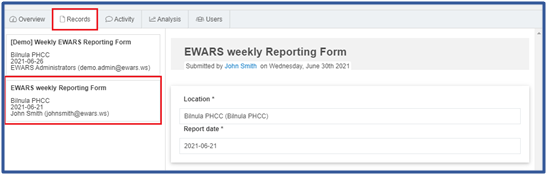
You can see the name of the user who submitted the report and the date of submission. You can also see the relevant forms/sub forms that triggered the alert at the left-hand side.
13.1.2 Commenting while managing alerts and checking user activity
Alert management is a dynamic and collaborative process. The activity section is used to facilitate easy communication between users handling a particular alert. Under this, you can view entries and comments made by users.
To view and add a comment, follow the steps below.
- Select Menu > Alert Logs > Open Alerts. Click on the view icon of an alert > click on the tab. Type your comment in the rectangular box at the bottom of the screen > click on and the comment is added.
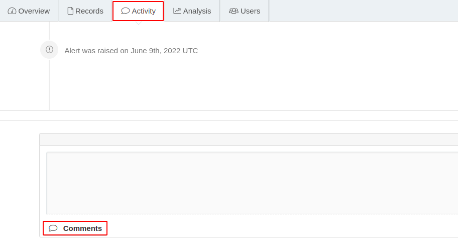
13.1.3 Analysing and viewing the disease trend that triggered the alert
- Select Menu > Alert Logs > Open Alerts. Click on the view icon of an alert (e.g. Cholera). Click on to analyse the record, and the alert trend below appears:
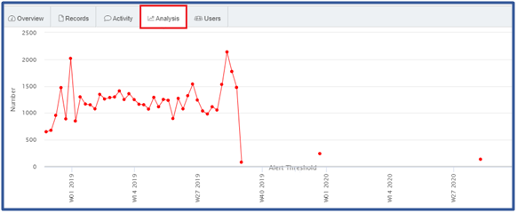
The graph shows the number of cholera cases reported from Nambutu over a period of time.
13.1.4 Viewing users for the alert
- Select Menu > Alert Logs > Open Alerts. Click on the view icon of an alert > click on , and the list of users who have participated in the alert appears:
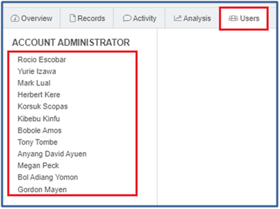
13.2 Verifying an alert
Once an alert is triggered, the first step is to verify it. Verification of the alert determines whether an alert is valid (true) or not.
Not all alerts are true or valid. For instance, calculation errors in the weekly tally, errors in data input, false rumours and similar may produce false alerts. Therefore, the first step in alert management is confirmation of triggered alerts as true and of public health importance.
Alert verification should be done in communication with the clinician, community health worker/volunteer or surveillance officer of the relevant alert.
To verify an alert, follow the steps below.
- Select Menu > Alert Logs > Open Alerts, and open alerts are listed. Click on the view icon of an alert to be verified, and the Alert Workflow screen below appears:
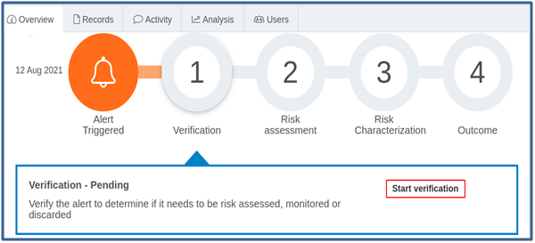
Click on Start verification, and the verification screen opens. Turn on guidance > go through the guidance notes. Guidance notes aid the verification process.
Enter Verification notes [Mandatory] (e.g. “The clinical presentation of all cases fits the case definition – the alert is a true alert” for a true alert, or “There is an error in reporting” for a false alert).
To set the verification Outcome, follow one of the options below.
Select Discard when the alert is verified as a false alert or refers to a disease or hazard that is not applicable to immediate public health action. Once discarded, the alert is closed, and no further steps are required. You can review the verification by clicking on . In the future, if the alert turns out to be critical or valid, you can re-open it and reassess the verification stage.
Select Monitor when you don’t have enough information for the alert to be verified. This indicates that the definitive outcome of an alert verification is still pending. When you have enough information, click on to update the alert.
Select Start Risk Assessment when the alert is verified as genuine. The alert is escalated to the risk assessment stage, and it must be assessed to understand the potential impact it may have on public health.
- Click on Submit.
 Note: rapidness of alert verification is a key performance measure of a good surveillance system. All triggered alerts should be verified within 48 hours. Note: rapidness of alert verification is a key performance measure of a good surveillance system. All triggered alerts should be verified within 48 hours. |
13.3 Assessing the risk of an alert
All verified alerts should be risk assessed to characterize the public health impact. The risk is assessed in the light of Hazard, Exposure and Context. Risk assessment should be conducted in communication with clinicians, surveillance officers and the laboratory network of the location.
To assess the risk, follow the steps below.
- Select Menu > Alert Logs > Open Alerts, and open alerts are listed. Click on the view icon of an alert that is to be assessed, and the alert opens for risk assessment, as shown below:
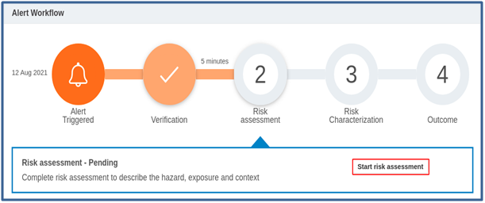
Click on Start risk assessment, and the risk assessment screen opens.
Enter Hazard Assessment information [Mandatory]. If confirmatory laboratory tests, rapid diagnostic tests or other supplementary tests have been conducted, enter the information here. Enter clinical or other epidemiological features (e.g. “Cholera Rapid Diagnostic test is positive, stool sample is sent for culture confirmation test. The patient showed clinical signs compatible with Cholera, rice-water stools and severe dehydration”).
Enter Exposure Assessment information [Mandatory]. Enter exposure information, such as how many individuals and populations are probably exposed to this hazard (e.g. “The patient is a food handler in the communal kitchen of the internally displaced person (IDP) camp. Three family members are already showing similar symptoms: diarrhoea and signs of dehydration. The camp population has not been vaccinated for cholera in the recent past”).
Enter Context Assessment information [Mandatory]. Describe the context that may affect either the transmission potential or the overall impact of the event (e.g. “The camp is overcrowded, with very poor water and sanitation facilities. No hygiene kits are available for distribution. Households do not have safe water for drinking”).
| Note: if you are waiting for lab results, click on Save Draft to save the risk assessment at the draft stage and come back when more information is available. |
- Click on Submit to move to the next stage.
Fig. 13.2. The risk assessment process
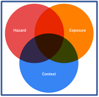
The risk assessment process involves assessment of the hazard or the suspected pathogen, possible exposure to the hazard and the context in which this takes place. Risk assessment is not always a linear, sequential process but an overlap of all three assessments. The outcome of the three individual assessments should be used to characterize the overall level of the verified alert in the next step.
13.4 Characterizing the risk of a verified alert
After the risk assessment has been completed, the next step is to assign an overall level of risk to the alert.
- Select Menu > Alert Logs > Open Alerts, and open alerts are listed. Click on the view icon of an alert, and the alert opens for risk characterization, as shown below:
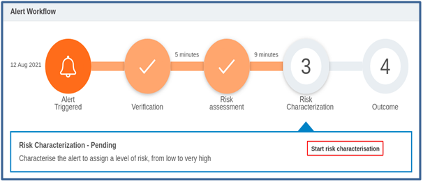
- Click on Start risk characterization, and the Risk Matrix is visible, as shown below:
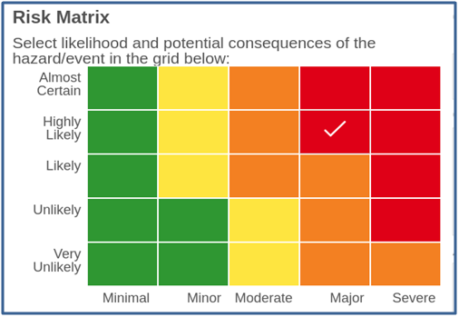
Click on a matrix cell. Risks are defined by the likelihood of the event and the potential severity of the consequences.
Go through the description of the selected risk – i.e. the likelihood, consequences and action comments.
Fig. 13.3 will help you to decide the level of risk. The risk assigned determines the urgency and scale of the response. When you have multiple risks, it also helps you to prioritize resources, based on risk levels.
Fig. 13.3. Level of estimated overall risk and potential response
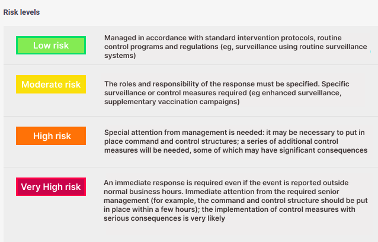
- Once you finalize the risk selection, click on Submit.
13.5 Determining the outcome
After a risk has been characterized, you can assign a risk outcome, as shown below.
- Select Menu > Alert Log > Open Alerts, and open alerts are listed. Click on the view icon of an alert > view the Alert Workflow at the outcome stage.
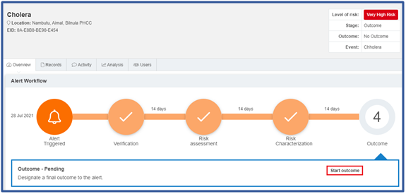
- Click on Start outcome, and the outcome screen opens.
To set the Outcome, follow one of the options below.
- Select Respond when the risk assessment determines that the alert requires immediate public health action (e.g. if cholera is confirmed). A cholera contingency plan is implemented immediately as a result.
- Select Discard when the risk assessment determines that the alert is not applicable to immediate public health action – for example, if all lab test results are negative for the specified pathogens, and clinical signs are attributed to accidental poisoning. When discarded, the alert is closed, and no further steps are required.
Note: if the alert turns out to be critical or valid in the future, you can re-open it and reassess the verification stage.
Select Monitor when the risk assessment is not yet determined (e.g. a culture confirmation of cholera is still awaited).
Enter relevant Comments for the option chosen.
Click on Submit, the alert is closed, and the screen below appears:
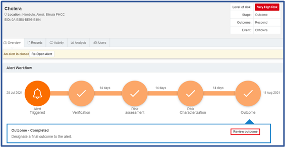
To review, click on Review outcome, and outcome-related information is visible on the screen.
Once you complete the process, unless you chose the Monitor option above, all alerts are switched from the Open Alerts list to the Closed Alerts list.
 It is It is |
of paramount importance that EWARS administrative users (Account Administrators and Geographical Administrators) follow up each alert through verification, risk assessment, characterization and outcome. Alert management should not be neglected or stopped part-way through the process. |
13.6 Re-opening closed alerts
Whenever the risk level changes or new information becomes available, you can re-open closed alerts. Closed alerts are alerts that are discarded, responded to or auto-discarded. For more information about auto-discarding alerts, refer to Chapter 7. Alarms, topic 7.4 Enabling auto-discard of an alert.
The steps to re-open an alert are as follows.
Select Menu > Alert Log > Closed Alerts, and closed alerts are listed. Click on the view
icon of an alert.Click on Re-Open Alert, and the Re-Open dialogue box below opens:
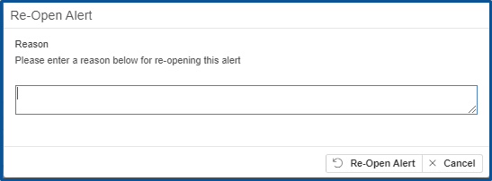
- Enter the reason for re-opening > click on Re-Open Alert, and the alert is re-opened.
13.7 Configuring alert maps
Alert maps allow you to visualize open and closed alerts on a map. You can configure location type in alert maps to visualize various alerts triggered from different administrative level locations, such as province, state and so on.
13.7.1 Configuring a location type for the alerts map
- Click on the settings icon at the top right-hand corner > click on
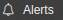
, and the screen below appears:
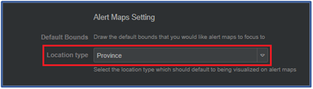
- Select the location type (e.g. Province) to configure the alert map based on provinces. Click on Save Change(s).
The following topic describes how to configure the alerts map based on provinces.
13.7.2 Viewing open alerts on a map
- Select Menu > Alert log > Alerts Map > click on Open, and the map is visible with province names and alert counts. Click on any province (e.g. Aimal), and alerts are visible, as shown below:
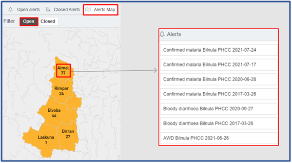
13.7.3 Viewing closed alerts on a map
- Select Menu > Alert log > Alerts Map > click on Closed, and the map is visible with province names and alert counts. Click on any province (e.g. Aimal), and alerts are visible, as shown below:
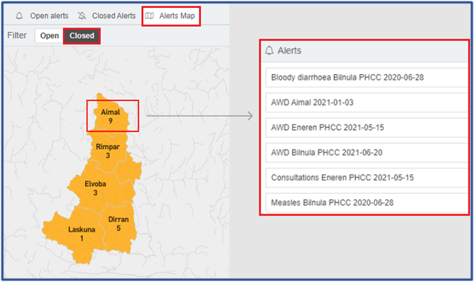
13.8 Exporting alert data
You can also export alert data to share it with other users. For more information on how to use the Export feature effectively, refer to Chapter 23. Exports, topic 23.3 Exporting alerts data.
The following chapter explores the Data Import feature, which facilitates easy and smooth importing of data from other systems to EWARS.